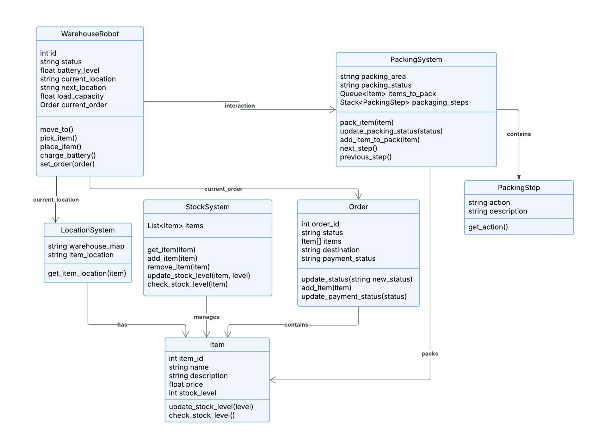
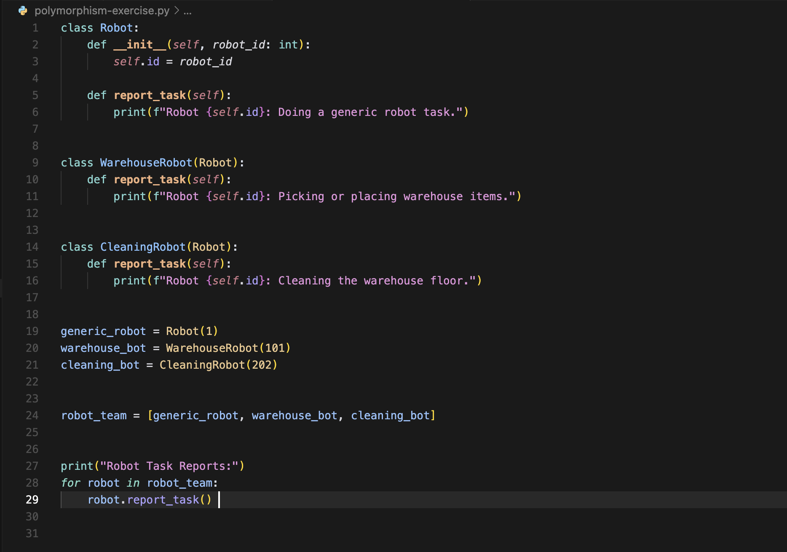
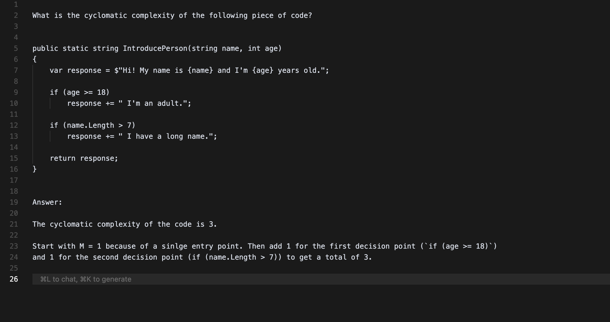

Reflection on Object-Oriented Programming
This reflection utilises the Four F's (Facts, Feelings, Findings, Future) framework to critically evaluate the learning experience of Object-Oriented Programming (OOP) concepts. As a junior frontend engineer primarily experienced with JavaScript and having only brief prior exposure to Python, this module, grounded in Allen B. Downey's "Think Python" and involving a project on designing robot-human interaction, offered a structured immersion into OOP principles such as Encapsulation, Abstraction, Inheritance and Polymorphism: interacting objects on which the structure of OOP programs is based, promoting modularity, reusability, and easier maintenance by breaking down complexity into manageable, encapsulated parts.
Facts
The module systematically introduced fundamental OOP concepts using Python. Key topics such as class definition, object instantiation, attributes, and methods were all put to the test through the system design of initial implementation of a project aimed at supporting robot-human interaction.
For the project of a warehouse robot, the system architecture was designed using OOP principles involving classes such as WarehouseRobot, PackingSystem, StockSystem, and others - each containing specific variables - managing their states and interactions effectively.
The project exhibits dynamic behaviour through interactions, Unified Modelling Language (UML) provides Interaction Diagrams specifically to visualise and analyse them.These diagrams are crucial for understanding system behaviour, debugging interactions, validating designs against requirements, and communicating the dynamic flow that a system like the Warehouse Robot uses.
To ensure a system behaves as expected we employ techniques such as debugging (finding and fixing errors), error handling (managing runtime issues) and testing (systematic verification of the software functioning as expected). These techniques are critical for creating reliable software and therefore foundational to professional software development.
Feelings
Engaging deeply with Python's approach to OOP felt like exploring familiar territory (object concepts) through a new lens. Having primarily worked with JavaScript objects, prototypes, and ES6 classes in a frontend context, Python's structure felt notably explicit and, in some ways, more formally defined.
Python's connections to JavaScript were evident. Python's class syntax offered a conceptual parallel to JavaScript's ES6 class, although the underlying difference between Python's class-based inheritance and JavaScript's prototypal inheritance was an important difference. The explicit nature of Python's self was different to the more context-dependent behaviour of JavaScript's this keyword. Python's clear separation of mutable (list) and immutable (tuple) sequence types also provided a different perspective compared to JavaScript arrays. Both languages clearly support multiple paradigms, including object-oriented and functional approaches.
The required self parameter, while initially feeling unnecessary compared to JavaScript's implicit this, quickly became appreciated for its clarity, removing the ambiguity often encountered with this binding in JavaScript callbacks or different execution contexts.
While comfortable manipulating objects and using classes in JavaScript for UI components or state management, the formal OOP structure presented in "Think Python" felt more rigorous, although there was an appreciation for Python's syntactic clarity. Concepts like class-based inheritance felt more straightforward compared to navigating JavaScript's prototype chain, especially having only briefly encountered Python before. Designing the robot-human interaction project using these principles was challenging but ultimately rewarding, as the OOP structure helped organise the complexity. Debugging interactions, however, sometimes felt frustrating, echoing similar challenges in complex JavaScript applications but perhaps highlighting Python's stricter error handling (e.g., TypeErrors).
Findings
The most significant finding was a reinforced understanding of OOP's power in managing complexity for building robust, maintainable software – a principle highly relevant to frontend architecture, demonstrated clearly through the robot-human interaction project. The module provided an excellent, accessible pathway into these structured concepts.
Python's emphasis on explicit self and its relatively stricter typing encourages a discipline that can be beneficially applied back to frontend software development, promoting more predictable state management and interaction logic. While JavaScript offers immense flexibility (often needed for dynamic UIs), Python's more structured approach to OOP provided a solid conceptual foundation that might be less explicitly taught in typical frontend onboarding.
Learning formal OOP through Python provided a valuable framework to critically assess JavaScript practices. It encouraged moving beyond simply using objects or basic classes towards intentionally designing with OOP principles like encapsulation and clear inheritance/composition patterns, even within a primarily JavaScript role.
Learning formal OOP through Python provided a valuable framework to critically assess JavaScript practices. It encouraged moving beyond simply using objects or basic classes towards intentionally designing with OOP principles like encapsulation and clear inheritance/composition patterns, even within a primarily JavaScript role.
Future
The structured understanding of OOP gained from this module will directly influence my professional approach as I intend to apply principles of clear encapsulation, well-defined interfaces, and thoughtful use of classes (or functional alternatives where appropriate) when building JavaScript components and managing application state, aiming for greater modularity and testability. Understanding Python's explicit self reinforces the need for careful testing and management of this in JavaScript.
This experience motivates exploring formal design patterns (Strategy, Observer, etc.) more deeply and applying them within frontend frameworks. The principles practiced in the robot-human interaction project – designing clear class hierarchies and managing object interactions – are directly applicable to designing complex UI components and state management logic. This cross-language perspective, rooted in a solid OOP foundation gained via Python, enhances my ability to architect robust and maintainable applications, contributing positively to my professional growth.
Unit 1: An Introduction to Python Programming and the OO Programming Paradigm
For this unit I have setup a basic Python environment to understand the basics of the Object-Oriented Programming Paradigm. I have accessed the Think Python textbook for the first time and found it to be a great resource for understanding the basics.
Unit 2: Object Oriented Analysis - Initial Steps towards Programming in Python
In Unit 2 we went deeper into the Object-Oriented Programming Paradigm using Chapter 16 and 17 of the Think Python textbook. Chapter 16 covers defining your own data types using classes (like a Time type) and looks at functions that either change objects or create new ones. Chapter 17 then transforms these functions into methods directly associated with the class, introduces special methods for setup (__init__) and display (__str__), and explains how operators like + can work with your custom types.
Unit 3: Unified Modelling Language (UML)
In this Unit we learned about UML diagrams and how they provide value throughout the Software Development Life Cycle. The ways in which they are used are as follows: Use Case and Activity diagrams dominate early requirements analysis to capture functionality and workflows; Component, Package, and Deployment diagrams shape high-level architectural design; detailed design heavily relies on Class, Sequence, Communication, and State Machine diagrams to specify object structure and interactions; these detailed diagrams then serve as a reference during implementation and inform test case design alongside Use Case and Activity diagrams for validation. All diagrams collectively act as crucial documentation for ongoing maintenance.
Unit 4: Applying a UML Model to a Program Implementation: UML in Practice
In this Unit we studied the implementation of UML diagrams in more depth, and we started working on the first submission for this module. An example of a class diagram is shown below:

Unit 5: More on Classes
For this Unit we focused on Classes, examining in depth the concepts of modularity, inheritance, aggregation, and composition. In addition, the concept of polymorphism was further explored through a practical excercise that can be found below:

Unit 6: Abstract Methods and Interfaces
For this Unit we focused on the concept of Abstract Methods and Interfaces and how they can be used to create more flexible and reusable code.
Unit 7: Debugging / Error Handling, Data Structures and Data Search
In this Unit we gained an understanding of how fundamental debugging code and handling errors are, and how to do so with the tools provided by Python. Furthermore, we continued to look at data structures to familiarise ourselves with different structures and apply a range of tecniques to them.
The activity Discuss the ways in which data structures support object-oriented development. Use examples of three different data structures to contextualise your response. can be found below:
Object-Oriented Programming (OOP) in Python relies fundamentally on built-in data structures to effectively manage the state encapsulated within objects and the relationships between them. While classes define the blueprint, structures like list, dict, and set provide the practical mechanisms for organising data internally. For instance, the list, an ordered and mutable sequence, is commonly utilised within an object to manage collections where sequence or multiplicity is important. A ShoppingCart object, for example, naturally employs a list to store Item objects, preserving the order of addition and allowing duplicates, thereby directly implementing the "has-many" aggregation or composition relationship central to many object-oriented designs. The list's inherent methods for appending, inserting, or accessing elements by index become integral parts of the encapsulating object's behavior.
Beyond simple ordered sequences, dictionaries (dict) and sets (set) offer specialised capabilities crucial for other common OOP scenarios. The dict, storing key-value pairs, enables highly efficient data retrieval based on unique identifiers, making it ideal for managing associations or internal mappings within an object, such as a UserRegistry using usernames as keys to quickly access User objects. Conversely, the set provides an unordered collection of unique elements, perfectly suited for situations where only the presence and uniqueness of items matter, like managing unique tags associated with an Article object, inherently preventing duplicates. Thus, list, dict, and set are not merely containers but essential tools integrated within object design, enabling the practical realisation of encapsulation, association, and efficient state management vital to robust object-oriented systems in Python.
Unit 8: Data Structures and Data Search in Practice
In this Unit we experimented with data stractures and practical operations on them. We also practiced the ways algorithms can be implemented using Python.
The Collaborative Discussion can be found below:
View Activity Discussion
Unit 9: Packaging and Testing
For this Unit we learned about testing and how to implement tests in a Python program. Through the textbook Review of Automated Test Case Generation, Optimisation, and Prioritisation Using UML Diagrams: Trends, Limitations, and Future Directions by Kongarana, S. R., Rao, A. A. and Raju, P. R. (2024), we learned how leveraging UML diagrams can help in having a structured approach for the automated generation of test cases. Their work surveys how models such as sequence or state diagrams can be systematically analysed to create test suites, optimise them for better coverage or reduced redundancy, and prioritise test execution. It also explores the limitations of this approach, like the focus on only certain diagram types and the need for better handling of model complexity.
The exercise on Cyclomatic Complexity can be found below:

Unit 10: Testing Code in Practice
In this Unit we learned how to write tests for a Python program and how to use tools like pylint to check the quality of the code. From the reading we learned that building quality software requires verification through testing to ensure it works correctly and meets requirements, and that this focus on quality means creating reliable and standard-compliant applications.
Unit 11: Pointers, References, Memory, and Design Patterns
In this Unit we learned about pointers, references, memory, and design patterns. This unit also included the submission for the implementation of the system we designed for the assignment in Unit 7.
The System Implementation assignment can be found below:
View System Implementation Assignment
Unit 12: Working with Design Patterns to Structure Code
In the final unit we learned about design patterns and how they can be used to structure code. For example, The Factory design pattern simplifies object creation by centralising the instantiation logic, allowing software to produce objects without knowing the specific class beforehand. Multiple design patterns are often used together within a single software project, and certain patterns frequently complement each other and are thus commonly applied in combination.
In this unit the e-portfolio was worked on and the final submission was made.